Quality control of sequencing data
Introduction to Bioinformatics · NGS day 1
This lecture
After this lecture you can:
- Explain why QC of sequencing data is necessary
- Interpret FastQC reports and their warnings
- Decide what action, if any, to take based on QC results
Where we are in the workflow

Why quality control?
From plant to reads
Plant tissue → DNA extraction → Library preparation → Sequencing → FASTQ files
Each step can introduce technical effects that later show up in QC reports.
We sequence to answer a biological question: which variants, which alleles, which genes are expressed.
All of these assume that the sequencing data reflects the real biology of the plant. QC checks whether that assumption is reasonable.
What can go wrong?
| Technical issue | Biological consequence | |
|---|---|---|
| Low base quality | → | False SNPs |
| Adapter contamination | → | Artificial variants |
| GC bias | → | Skewed allele frequencies |
| High duplication | → | Overconfidence in genotypes |
In a breeding context this could mean choosing the wrong markers, missing true marker-trait associations, misjudging genetic diversity.
Step 1: DNA extraction
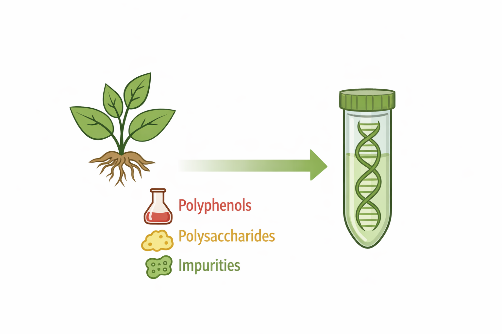
- Polyphenols and polysaccharides interfere with enzymes and make DNA sticky
- DNA quality varies between samples, tissues, methods and people
Step 2: Library preparation
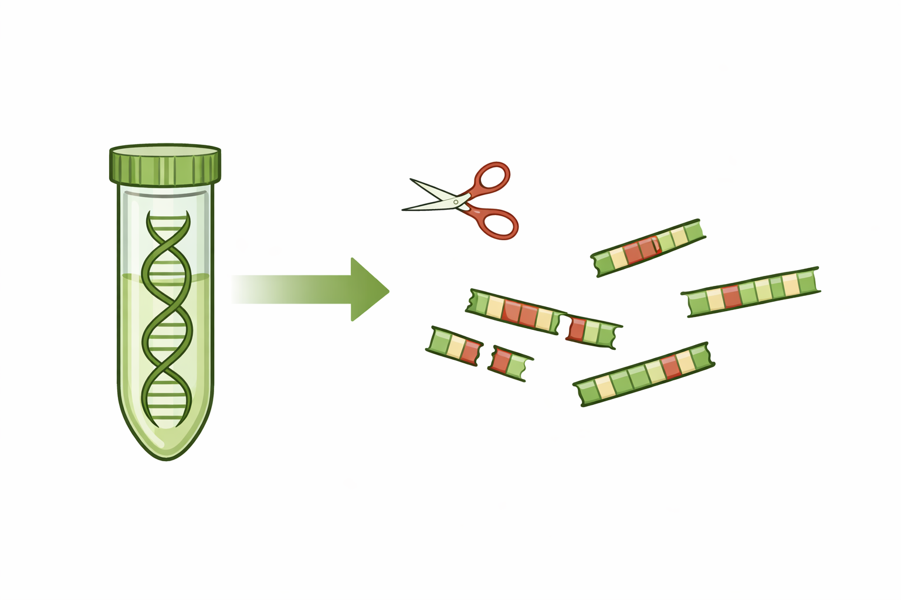
- DNA is sheared, adapters are ligated, fragments are amplified by PCR
- Degraded DNA gives uneven coverage
- PCR amplifies some fragments more than others: PCR bias
Step 3: Sequencing
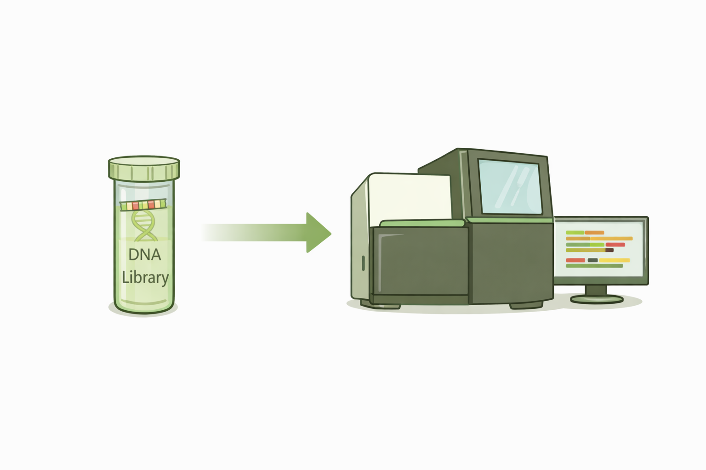
- Base calls get less accurate towards the end of the read
- Errors accumulate over cycles
- Lanes and runs differ in quality
Plant genomes are special
QC tools are generic. They don’t know your data comes from a plant.
- Large genomes, high repeat content
- Polyploidy and high heterozygosity
- GC content that varies between species
So GC plots can look unusual and duplication can be high, even for good data.
QC tools show you what looks unusual. You need biological knowledge to decide why.
The raw reads
From the sequencer we get the raw data in FASTQ file format. Each read takes four lines:
@A00123:45:HKLMNDSX3:2:1101:10004:1000 1:N:0:ACGTACGT
GATCCTAGCAATGGTCGTACCGTTAGCTTGAACCTAGGATCAGTTCAAGC
+
FFFFFFFFF:FFFFFFFFFFF:FFF,FFFFFFF:FFFF:FF,F:F:,#:,
| Line | Content |
|---|---|
| 1 | @ + read name: instrument, run, flow cell, lane, tile, position; 1 = read 1 of the pair |
| 2 | The sequence |
| 3 | + (sometimes the name again) |
| 4 | One quality character per base |
Quality scores
Phred score
Q = −10 × log10(Perror)
| Q | Error rate | Accuracy |
|---|---|---|
| 10 | 1 in 10 | 90% |
| 20 | 1 in 100 | 99% |
| 30 | 1 in 1,000 | 99.9% |
| 40 | 1 in 10,000 | 99.99% |
One character per base
Q = ASCII code − 33
| Character | ASCII | Q |
|---|---|---|
# |
35 | 2 |
, |
44 | 11 |
: |
58 | 25 |
F |
70 | 37 |
FastQC
What FastQC does
- Reads a FASTQ file: millions of reads, each with a quality score per base
- Runs a series of standard tests, called modules
- Writes an HTML report with a figure or table per module
FastQC does not know your experiment or your plans. The interpretation and decisions are up to you.
Pass, warn, fail
Every module gets a label: ✅ pass, ⚠️ warn, ❌ fail.
- A fail does not mean the data is unusable
- A pass does not mean the data is perfect
- Thresholds are generic: they assume random, whole-genome DNA
Treat the flags as signals to investigate, not as decisions.
Basic statistics
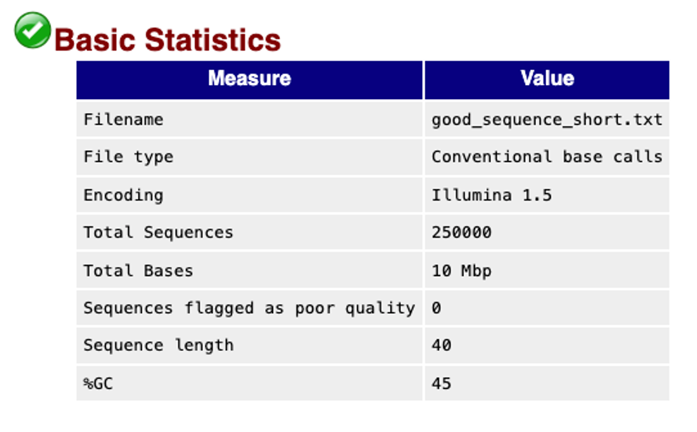
Shows file name, number of reads, read length, GC %.
Check you are looking at the right sample, and compare read numbers between files.
Never raises a warning.
Per base sequence quality
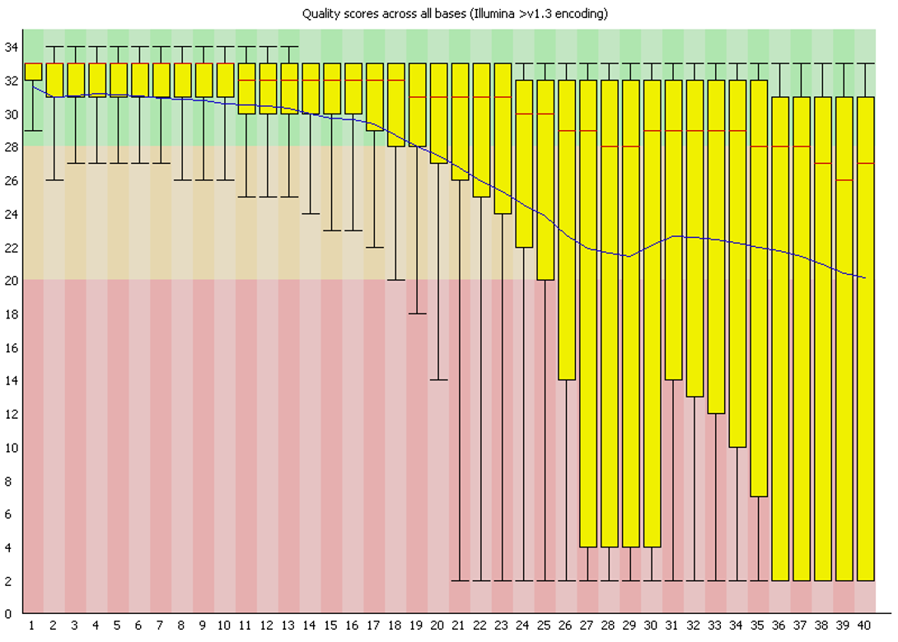
Shows quality scores at each position in the read.
We expect high quality at the start, a slow decline towards the end.
Warning signs include a sharp drop, large parts of the read in the red, big differences between samples.
Your turn: Pause the video
- From which position does the quality drop?
- Would you use these reads as they are?
The answer
- The median (red line) stays above 26, but the mean (blue line) drops below 28 around position 19. From position 26 at least a quarter of the reads are in the red zone.
- Not as they are. Trim the low-quality ends, then run FastQC again.
Per sequence quality scores
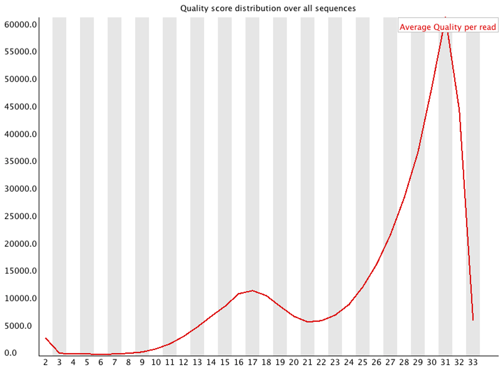
Shows the mean quality per read, not per position.
We expect one sharp peak at high quality.
Warning signals include a large share of low-quality reads, or a second peak. Points to library or sequencing problems, or poor starting material.
Per base sequence content
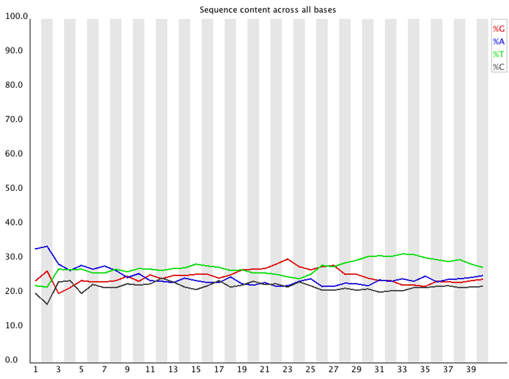
Shows the share of A, C, G and T at each position.
We expect flat lines for random genomic DNA.
But many library types are biased at the start of the read, RNA-seq always. Ask whether the pattern is expected for your experiment.
Per sequence GC content
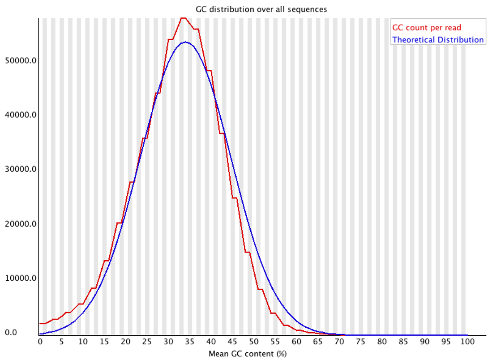
It shows GC content of the reads, against a theoretical curve.
We expect roughly a normal distribution, peaking at the genome’s GC content.
Warning signals include a second peak or a shifted sample: contamination. In plants also repeats or genome composition. Always compare samples with each other.
N content and read length
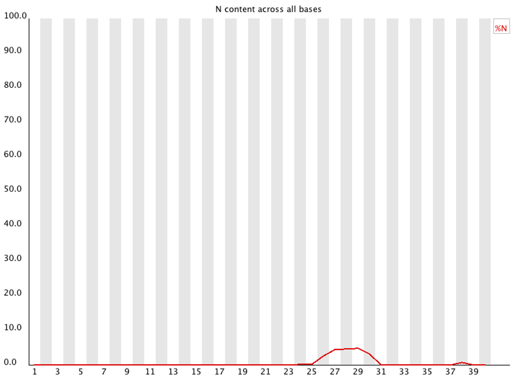
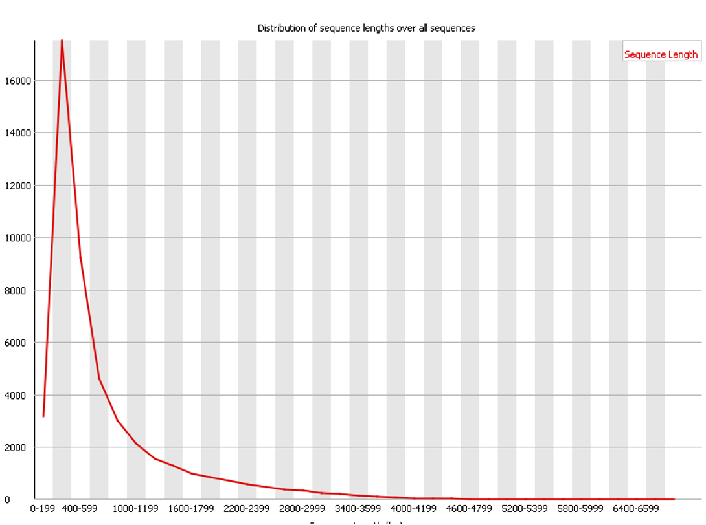
- N content: the sequencer could not call the base. A few at the end of reads is normal.
- Read lenght: Illumina reads have one length; PacBio and Nanopore vary. After trimming, lengths vary too.
Sequence duplication levels
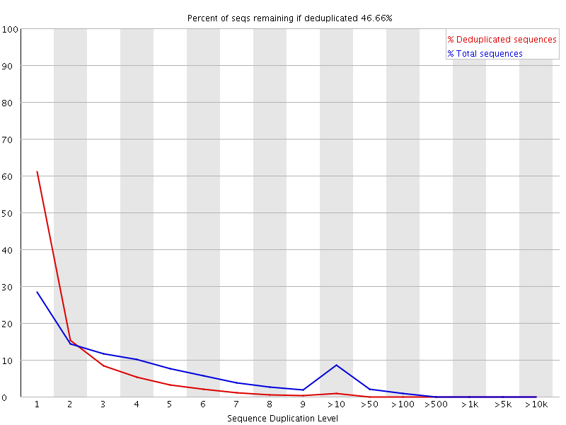
It shows how often identical sequences occur.
We expect most sequences to occur once in a diverse library.
High duplication comes from PCR bias, low library complexity or very deep sequencing. In plants also conserved and repetitive regions. Normal in RNA-seq.
Overrepresented sequences and adapters
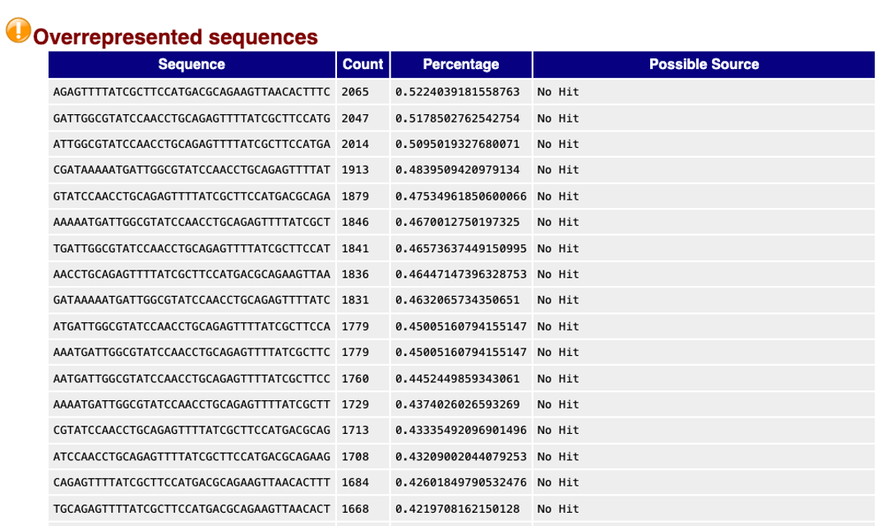
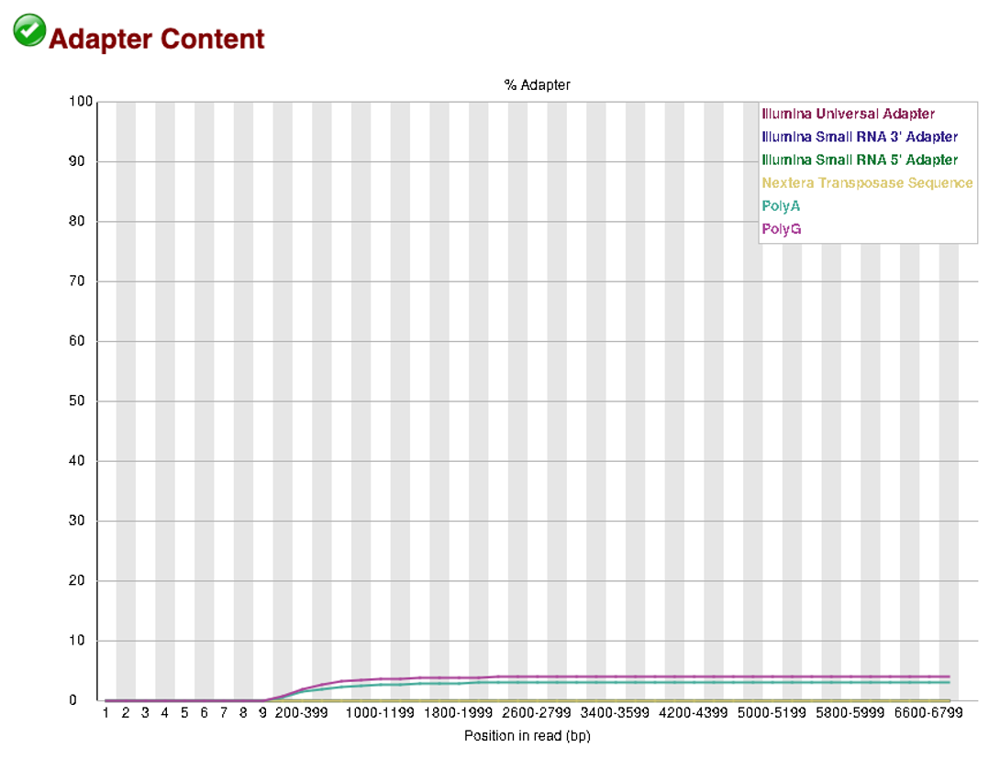
- Overrepresented means single sequences are much more common than expected. Could be adapters, primers, repeats, or real biology.
- Adapter content shows which adapter is present, and how much. Tells you what to trim.
K-mer content (optional)
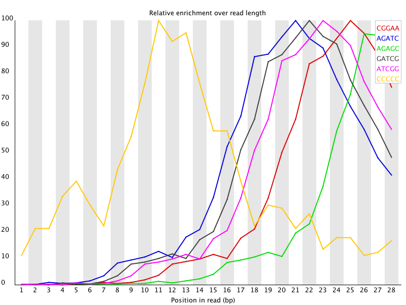
A k-mer is a short sequence of length k, for example the 7-mer ATCGTGA.
FastQC looks for k-mers enriched at certain positions. Enrichment at the start or end of reads usually means adapters, primers or library artefacts.
Only 2 % of the reads are checked.
After QC
Three possible outcomes
QC helps you to decide what to do next with your data.
- Use as is: minor or expected warnings
- Process: trim adapters or low-quality ends, then run FastQC again
- Investigate: serious problems may mean re-preparing, resequencing or excluding the sample
QC in a reproducible workflow
- Run QC the same way on all samples
- Record which issues you saw
- Document what you did about them, and why
Many samples: MultiQC
Dozens of samples × 2 reads × FastQC before and after trimming: too many reports to read one by one.
MultiQC collects them into one report:
- Samples side by side
- Outliers stand out
- Systematic problems across samples become visible
You will use FastQC, MultiQC and fastp in the exercises.
Summary
- QC protects your biological conclusions from technical problems
- Remeber problems can start long before the FASTQ file: during extraction, library preparation, sequencing
- FastQC flags are signals, not verdicts; interpret them for your data and organism
- After QC: use, trim and re-check, or investigate
- Document what you checked and what you did
FastQC figures and module descriptions adapted from the FastQC documentation, Babraham Bioinformatics.

Quality control · Introduction to Bioinformatics